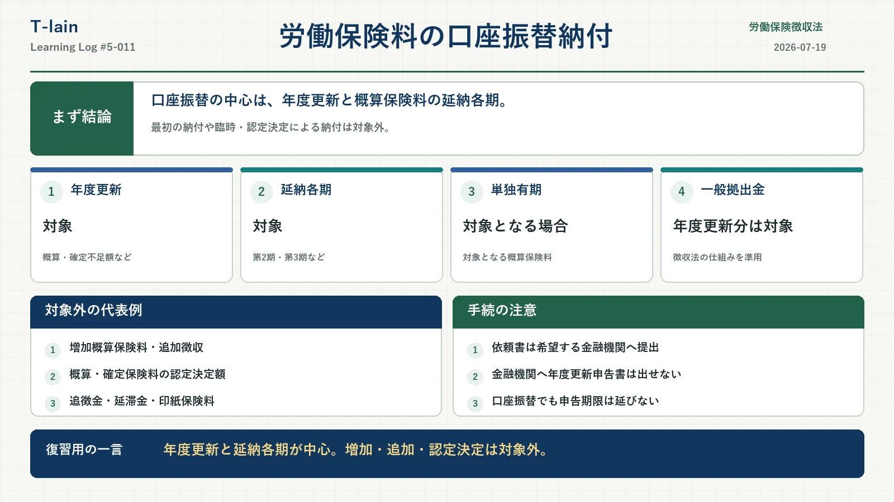

今日のテーマ
労働保険料は、納付書や電子納付だけでなく、事前に申し込むことで指定した金融機関の口座から納付できる。
ただし、労働保険に関するすべての保険料や徴収金が対象になるわけではない。今回は、何を口座振替でき、何が対象外になるのかを、納付の根拠条文から整理する。
まず結論
口座振替の中心は、年度更新の概算保険料・確定保険料の不足額、延納各期、対象となる単独有期事業の概算保険料。最初の納付や、臨時・認定決定による納付は対象外となる。
- 利用には、事業主からの申出と政府の承認が必要。
- 印紙保険料は、徴収法21条の2で明確に対象外とされている。
- 口座振替日が通常の納期限後でも、要件を満たせば納期限に納付したものとみなされる。
- 口座振替を利用しても、年度更新申告書の提出期限は延びない。
労働保険徴収法21条の2
徴収法21条の2は、事業主が預貯金口座のある金融機関に労働保険料の納付を委託して行うことを希望した場合、一定の要件のもとで政府がその申出を承認できると定めている。
対象は印紙保険料以外の労働保険料のうち、厚生労働省令で定める納付に限られる。つまり、「印紙保険料以外なら何でも口座振替できる」という制度ではない。
また、所定の口座振替日に納付されたものは、実際の引落日が通常の納期限後であっても、督促と延滞金との関係では納期限に納付したものとして扱われる。
施行規則38条の4が定める対象
施行規則38条の4が口座振替の対象としているのは、納付書によって行われる次の納付である。
- 徴収法15条1項・2項によって納付する概算保険料
- 徴収法18条によって延納する、15条1項・2項の概算保険料
- 徴収法19条3項によって納付する確定保険料またはその不足額
実務上の対象範囲もあわせて考える必要があるため、名称だけでなく「どの手続に基づく納付か」を見る。
口座振替できるもの・できないもの
| 労働保険料等 | 口座振替 | 確認ポイント |
|---|---|---|
| 年度更新の概算保険料 | 対象 | 最初の納付を除く |
| 概算保険料の延納各期 | 対象 | 第2期・第3期、単独有期では第4期の場合もある |
| 年度更新の確定保険料の不足額 | 対象 | 継続事業・一括有期事業の前年度分 |
| 年度更新時の一般拠出金 | 対象 | 石綿健康被害救済法による |
| 増加概算保険料 | 対象外 | 徴収法16条は列挙されていない |
| 概算保険料の追加徴収 | 対象外 | 徴収法17条は列挙されていない |
| 概算・確定保険料の認定決定額 | 対象外 | 通常の自己申告による納付ではない |
| 追徴金・延滞金・印紙保険料 | 対象外 | 施行規則38条の4の対象ではない |
概算保険料と延納各期
継続事業と一括有期事業では、年度更新における当年度の概算保険料が口座振替の中心となる。延納が認められている場合には、第1期だけでなく、第2期・第3期も対象になる。
単独有期事業の概算保険料も対象に含まれる。延納の状況によっては、第4期まで設けられる場合がある。
ただし、厚生労働省の案内では、最初に労働保険料を納付する場合は対象外とされている。新たに事業を開始して最初に納める概算保険料などは、通常、納付書や電子納付によって納付する。
最初の納付後であっても、希望する納期に間に合うよう、所定の申込期限までに手続を終えておく必要がある。
増加概算保険料は対象外
保険料算定基礎額の見込額が大幅に増加し、徴収法16条の要件を満たした場合には、増加概算保険料を申告・納付する。
しかし、施行規則38条の4には徴収法16条が列挙されていないため、増加概算保険料は口座振替の対象外となる。口座振替を利用中でも、納付書や電子納付などの別の方法で納める。
概算保険料の追加徴収は対象外
政府が一般保険料率または第1種・第2種・第3種特別加入保険料率を引き上げた場合には、徴収法17条に基づく概算保険料の追加徴収が行われる。
徴収法17条による納付は施行規則38条の4に含まれないため、追加徴収額は口座振替できない。
認定決定による納付は対象外
概算保険料申告書や確定保険料申告書が未提出の場合、または記載に誤りがある場合、政府が保険料額を決定して通知することがある。
概算保険料の認定決定によって納める額や、確定保険料の認定決定によって納める確定保険料または不足額は、施行規則38条の4が対象とする通常の自己申告による納付には含まれない。
認定決定に伴う追徴金や、納期限後の延滞金も口座振替の対象外となる。
確定保険料の不足額は範囲に注意
口座振替の対象となる確定保険料の不足額は、継続事業・一括有期事業の年度更新における、前年度の確定保険料の不足額が中心となる。
事業廃止時に申告する確定保険料の不足額と一般拠出金は、口座振替の対象外である。納付書などを使って納める。
また、過年度の訂正申告など、通常の年度更新とは異なる納付については、口座振替の対象外となる場合がある。年度更新で生じた通常の不足額と同じ扱いだと決めつけないようにしたい。
一般拠出金も口座振替できる
石綿健康被害救済法に基づく一般拠出金は労働保険料そのものではないが、年度更新における対象分は労働保険料とあわせて口座振替される。
法的な根拠は、石綿健康被害救済法38条1項が、一般拠出金について労働保険徴収法21条の2を読み替えて準用していることである。
ただし、事業廃止時の一般拠出金など、通常の年度更新とは異なる納付は対象外となる。
口座振替を利用しても申告期限は延びない
口座振替では、実際の引落日が通常の納期限より後に設定されることがある。しかし、延びるのは実際の納付時期であって、年度更新申告書の提出期限ではない。
年度更新申告書は期限内に提出する必要がある。年度更新手続期間中に申告書を提出しなかった場合、第1期分の口座振替処理が行われないことがある。
口座振替の申出と実際の手続
法令上、口座振替の申出は、所轄都道府県労働局歳入徴収官に対して行う。
実際の申込手続では、所定の口座振替依頼書を、口座振替を希望する金融機関の窓口へ提出する。労働局や労働基準監督署では、口座振替依頼書を受け付けていない。
- 希望する納期ごとに申込期限がある。
- 複数の労働保険番号がある場合は、番号ごとに依頼書が必要。
- 口座情報の変更・解除も、所定の依頼書を金融機関へ提出する。
- 残高不足で振替不能になっても、再度の自動引落しは行われない。
年度更新申告書は、申告書の種類や事業区分に応じた提出先へ、窓口・郵送・電子申請などにより提出する。口座振替利用中は、金融機関窓口へ年度更新申告書を提出できない。
残高不足で引き落とせなかった場合
残高不足などで口座振替ができなかった場合、再度の自動引落しは行われない。後日送付される口座振替不能通知書に添付された納付書などで納付する。
納付が遅れれば延滞金が生じる可能性があるため、振替日前に残高を確認しておきたい。
試験対策のポイント
- 口座振替の対象は、施行規則38条の4に列挙された納付に限られる。
- 印紙保険料は、徴収法21条の2で対象外とされている。
- 年度更新の概算保険料・確定不足額と、概算保険料の延納各期が中心。
- 最初に納付する労働保険料は対象外。
- 増加概算保険料、追加徴収、認定決定額、追徴金、延滞金は対象外。
- 事業廃止時の確定保険料と一般拠出金は対象外。
- 口座振替を利用しても、年度更新申告書の提出期限は延びない。
- 口座振替利用中は、金融機関窓口へ年度更新申告書を提出できない。
今日のまとめ
労働保険料の口座振替納付は便利だが、対象はすべての保険料や徴収金ではない。年度更新の概算保険料・確定不足額、延納各期、対象となる単独有期事業の概算保険料が中心となる。
増加概算保険料、追加徴収、認定決定額など、通常の申告納付とは別に発生するものは対象外となる。名称だけで判断せず、施行規則38条の4に列挙されている根拠条文を見る。
復習用の一言まとめ
口座振替は年度更新と延納各期が中心。増加・追加・認定決定は対象外。